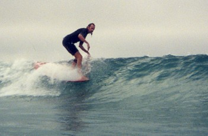

The first link goes Home . The second link is Research . The third link is Services . The fourth link is Collections . The fifth link is About . The sixth and last link is Ask a Librarian!

Will Allison
| A surfing legend and subject of hero worship among many surfers, Will Allison has been surfing since 1964. By the early 1970s, he was among one of the first contigents of North Carolinians to charge the famed waves on Hawaii's North Shore. A longtime competitor, Allison won the 1979 US Surfing Championships and was a multiple champion at the East Coast Surfing Championships and Eastern Surfing Championships through the 1970s and 1980s. Notably in 1980, he became the first North Carolinian to surf on the World Team, an opportunity that he shared with two other surfing luminaries - Tom Curren and Willie Morris. An expert craftsman, he has also shaped surfboards since 1977 and continues to refine his skills each year by modifying the shapes and boards that he rides. When not shaping or spending time with his family, you'll find Will in the waters at Wrightsville Beach or another nearby barrier island. He was inducted into the East Coast Surfing Legends Hall of Fame in January 2006. For more information on Allison please see the following article. The article is part of a series on east coast surfing legends published by Eastern Surf Magazine (Reprinted with permission of Eastern Surf Magazine). |

|
|
Page created and maintained by:Peter Fritzler, Randall Library, University of North Carolina Wilmington
First online: March 2003
Last update: October 13, 2009
Citing This Page:
"Rodney Everhart." Cape Fear Surfing Archive. William Randall Library, University of North Carolina Wilmington.
[Created: August 10, 2007; Updated: October 30, 2007; Cited]. Available from http://library.uncw.edu/surf/people/everhartr.